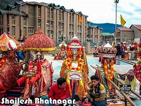
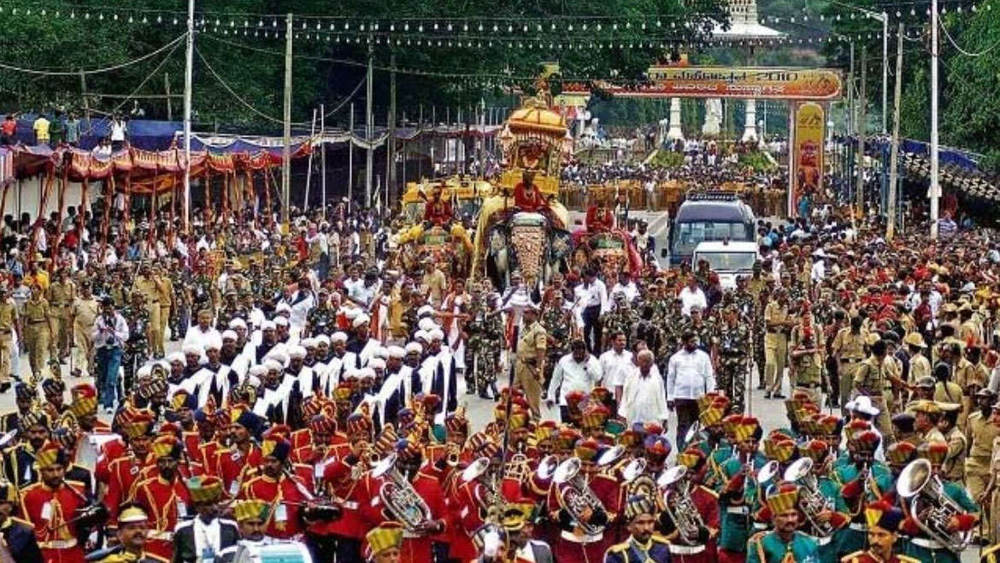
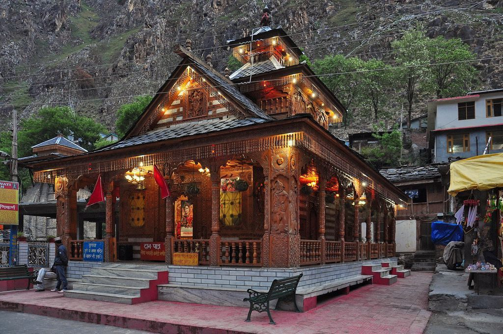
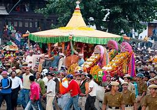
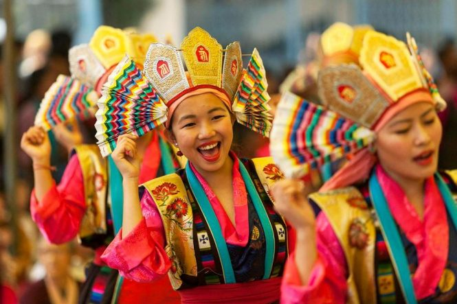
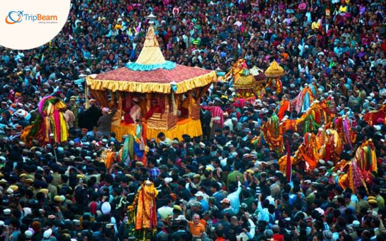

Himachal Pradesh, known for its scenic landscapes and rich cultural heritage, celebrates a variety of festivals that reflect its diverse traditions and communities.
Religious Festivals
Shivratri:
A week-long festival dedicated to Lord Shiva, featuring fairs, cultural programs, and traditional dances.
It highlights the rich folklore of the region.
Minjar Mela (Chamba):
Celebrated in July or August, this festival involves a week of cultural activities, including folk performances, parades, and local handicraft exhibitions.
Naina Devi Fair:
Held at the Naina Devi Temple, this fair attracts devotees from far and wide, featuring religious rituals, cultural performances, and local crafts.



Cultural Festivals
Kullu Dussehra:
A week-long festival in October, it features a grand procession of deities from various temples, traditional folk dances, and local crafts.
It's one of the most famous festivals in the region.
Tibetan New Year (Losar):
Celebrated by the Tibetan community in Himachal, it includes traditional music, dance, and feasting, marking the arrival of spring.
Lavi Fair:
The Tulip Festival in Jammu and Kashmir is a spectacular annual event held in Srinagar, showcasing the breathtaking beauty of tulip gardens.
It typically takes place in early April, aligning with the blooming season of tulips, and is one of the largest flower festivals in Asia.


